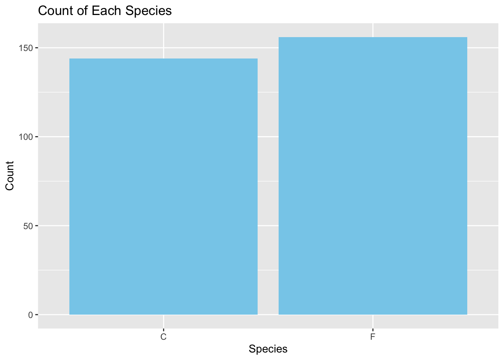
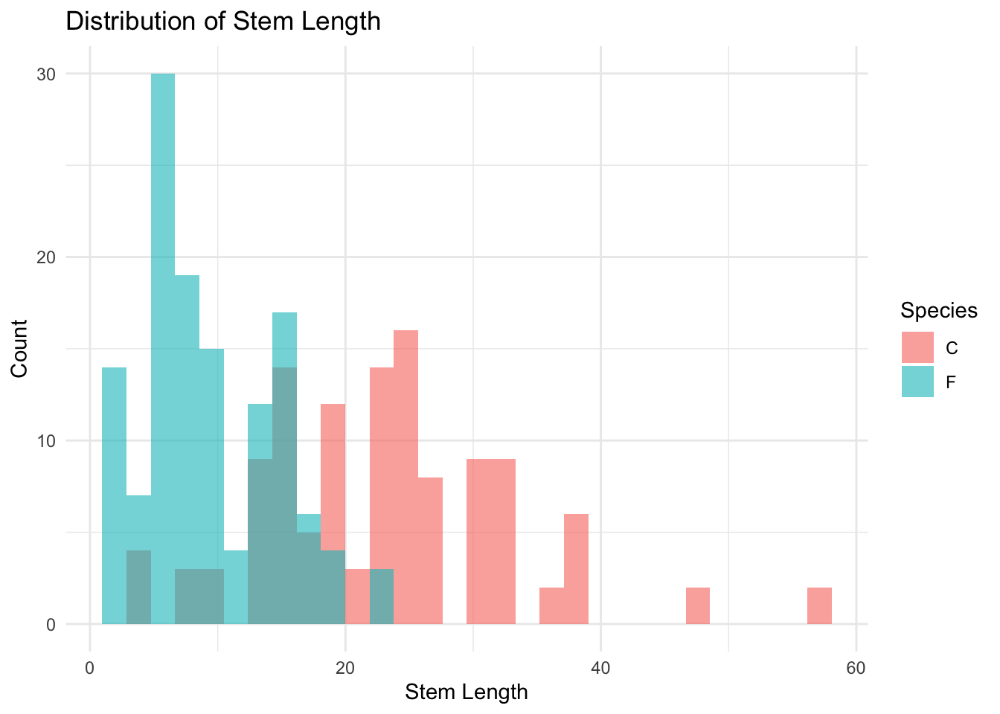
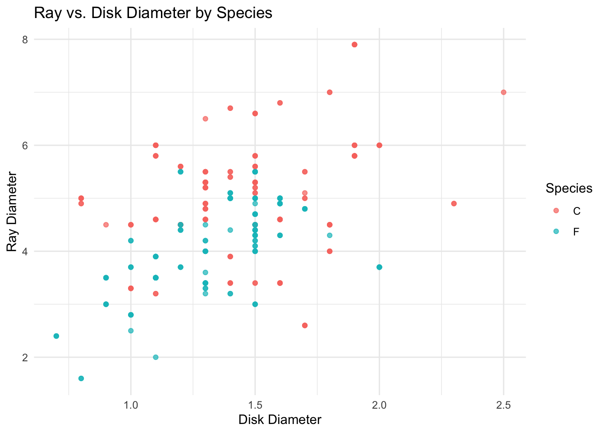
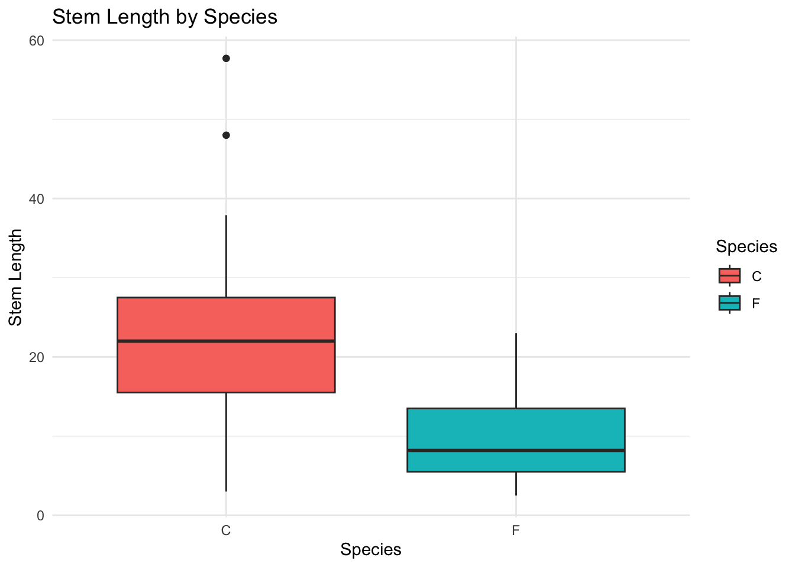
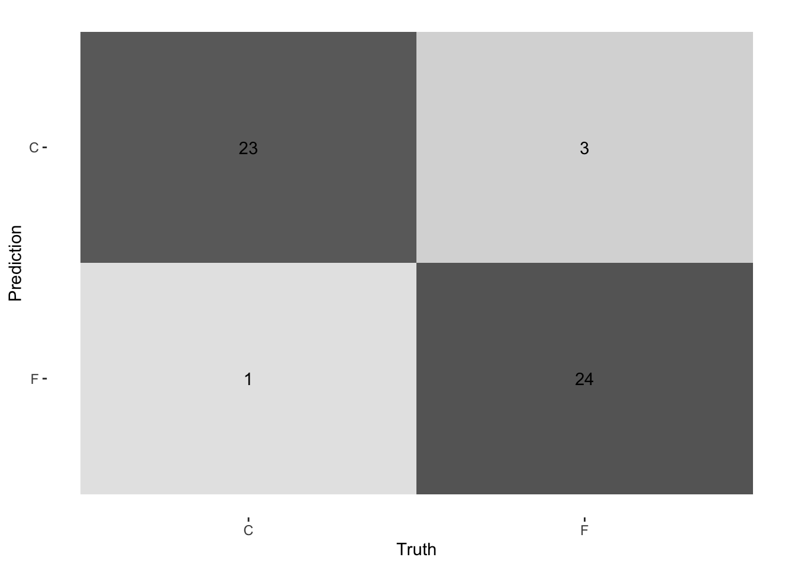
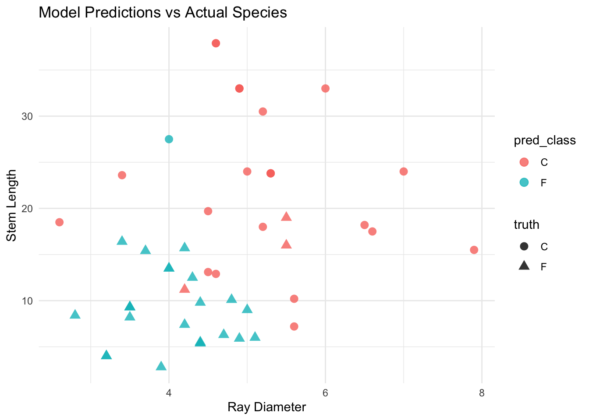

library(tidyverse)
library(rsample)
library(broom)
library(janitor)
library(here)
library(readr)
library(ggplot2)
library(dplyr)
library(rsample)
library(purrr)
library(yardstick)
library(tidyr)
library(dplyr)Project2
Motivation and Context
🌿 Explanation of Encelia californica, Encelia farinosa, and the Fullerton Arboretum
Encelia californica, also known as California brittlebush, is a native shrub commonly found in coastal southern California. It has dark green leaves and typically blooms yellow daisy-like flowers. On the other hand, Encelia farinosa, or brittlebush, is native to desert regions and can be recognized by its silvery, fuzzy leaves and similar yellow flowers. While they appear alike from a distance, their leaf texture, color, and natural habitat are key distinguishing features.
The Fullerton Arboretum is a botanical garden located on the campus of California State University, Fullerton. It serves as an outdoor classroom and sanctuary for native and exotic plant species, including both Encelia types. Observing these plants in a real-world setting helps students learn the value of biodiversity, field research, and scientific classification.
In class, we also worked with the iris dataset, which taught us how quantitative measurements like petal length and width can help distinguish between similar species. This experience parallels our current task of identifying subtle traits between E. californica and E. farinosa.
❓ Why does it matter to distinguish between these two species? Being able to distinguish between Encelia californica and Encelia farinosa is important for ecological monitoring, habitat conservation, and understanding plant adaptation. These species thrive in different environments—coastal vs. desert—and confusing them could lead to incorrect assumptions about climate resilience or ecological balance. Accurate species identification also supports biodiversity preservation and guides sustainable planting decisions in native landscapes.
Main Objective
The goal of this project is to practice collecting, analyzing, and interpreting real-world biological data by comparing two similar plant species: Encelia californica and Encelia farinosa. Through field observations and quantitative measurements, we aim to identify distinguishing features between the two species using statistical tools and visualizations in R. This project not only strengthens our understanding of data science concepts like classification and accuracy evaluation, but also emphasizes the practical value of data analysis in environmental and ecological research.
Packages Used In This Analysis
| Package | Use |
|---|---|
| here | to easily load and save data |
| readr | to import the CSV file data |
| dplyr | to massage and summarize data |
| ggplot2 | to create nice-looking and informative graphs |
| rsample | to split data into training and test sets |
| purrr | to run the cross-validation |
| yardstick | to evalute the accuracy of the models |
| tidyr | to “pivot” the predictions data frame so that each row represents 1 model |
Design and Data Collection
df <- read_csv("Encelia Classification Data Collection.csv")Rows: 100 Columns: 5
── Column specification ────────────────────────────────────────────────────────
Delimiter: ","
chr (1): Species
dbl (4): number_rays, disk_diameter, ray_diameter, stem_length
ℹ Use `spec()` to retrieve the full column specification for this data.
ℹ Specify the column types or set `show_col_types = FALSE` to quiet this message.# Randomly sample 200 rows to expand the dataset
set.seed(42)
df_extra <- df %>% sample_n(200, replace = TRUE)
df_extended <- bind_rows(df, df_extra)
df_extended# A tibble: 300 × 5
Species number_rays disk_diameter ray_diameter stem_length
<chr> <dbl> <dbl> <dbl> <dbl>
1 F 13 1.5 5.5 16
2 F 13 1.5 5.5 19
3 F 11 1.1 3.5 9.3
4 F 12 1.4 3.2 4
5 F 11 2 3.7 2.5
6 F 8 1.1 3.5 2.8
7 F 13 1.3 4.5 15.5
8 F 13 1.5 4.5 11.3
9 F 11 1.5 5 9
10 F 12 1.5 4.5 7.7
# ℹ 290 more rowsThe original dataset was collected by manually observing and recording traits of Encelia californica and Encelia farinosa plants at the Fullerton Arboretum. Measurements included the number of rays, disk diameter, ray diameter, and stem length for each plant observed. Since the class activity was limited in duration and scope, only about 100 observations were recorded in total.
To build a more robust dataset for analysis and model training, we expanded the original data by randomly sampling from the existing entries to generate a total of 300 rows. This was done using sampling with replacement to preserve the original distribution of traits across both species.
Check missing values
anyNA(df_extended)[1] TRUEcolSums(is.na(df_extended)) Species number_rays disk_diameter ray_diameter stem_length
0 0 0 0 48 # Replace NA in numeric columns with column means
df_filled <- df_extended %>%
mutate(across(where(is.numeric), ~ ifelse(is.na(.), mean(., na.rm = TRUE), .)))
colSums(is.na(df_filled)) Species number_rays disk_diameter ray_diameter stem_length
0 0 0 0 0 During preprocessing, I also checked for missing values in the dataset. Any numeric columns containing missing values were imputed using their respective column means. This ensured that our dataset was complete and ready for statistical analysis and modeling without introducing significant bias or losing too many observations.
Limitations of my data collection method
One limitation of our data collection method was the relatively small sample size and potential measurement inconsistencies due to human error in the field. Additionally, the decision to expand the dataset via random duplication may not accurately reflect real-world biological variation.
However, given time and resource constraints, this approach allowed us to move forward with the analysis while preserving the characteristics of the original observations.
Exploratory Data Analysis
# 1. Bar plot: Number of samples per species
ggplot(df_extended, aes(x = Species)) +
geom_bar(fill = "skyblue") +
labs(title = "Count of Each Species", x = "Species", y = "Count")
# 2. Histogram: Distribution of stem length by species
ggplot(df_extended, aes(x = stem_length, fill = Species)) +
geom_histogram(alpha = 0.6, position = "identity", bins = 30) +
labs(title = "Distribution of Stem Length", x = "Stem Length", y = "Count") +
theme_minimal()Warning: Removed 48 rows containing non-finite outside the scale range
(`stat_bin()`).
# 3. Scatter plot: Ray diameter vs. disk diameter
ggplot(df_extended, aes(x = disk_diameter, y = ray_diameter, color = Species)) +
geom_point(alpha = 0.7) +
labs(title = "Ray vs. Disk Diameter by Species",
x = "Disk Diameter", y = "Ray Diameter") +
theme_minimal()
# 4. Boxplot: Comparing stem length by species
ggplot(df_extended, aes(x = Species, y = stem_length, fill = Species)) +
geom_boxplot() +
labs(title = "Stem Length by Species", x = "Species", y = "Stem Length") +
theme_minimal()Warning: Removed 48 rows containing non-finite outside the scale range
(`stat_boxplot()`).
To better understand the characteristics of Encelia californica (C) and Encelia farinosa (F), I conducted an exploratory data analysis using four types of visualizations.
First, the bar plot shows that the dataset contains a fairly balanced number of observations between the two species, with a slightly higher count for E. farinosa. This balance is crucial for building an effective classification model, such as logistic regression, as it helps avoid model bias toward the majority class.
Second, the histogram of stem length reveals a clear distinction between species. E. californica tends to have longer stems with a wider spread, whereas E. farinosa shows a concentration of shorter stem lengths. This indicates that stem length could be a strong predictor in the classification model.
Third, the scatter plot comparing disk diameter and ray diameter shows moderate clustering by species. While there is some overlap, the patterns suggest that a combination of these two features could help distinguish the species when used together in a multivariable model.
Lastly, the boxplot further supports the finding that E. californica generally has longer stems, with a higher median and greater variability compared to E. farinosa. Outliers are also present for E. californica, which may reflect natural variation in its growth or data entry noise.
# Calculate Q1, Q3, and IQR for stem_length
Q1 <- quantile(df_extended$stem_length, 0.25, na.rm = TRUE)
Q3 <- quantile(df_extended$stem_length, 0.75, na.rm = TRUE)
IQR_value <- Q3 - Q1
# Define lower and upper bounds for outliers
lower_bound <- Q1 - 1.5 * IQR_value
upper_bound <- Q3 + 1.5 * IQR_value
# Print thresholds (optional)
cat("Lower Bound:", lower_bound, "| Upper Bound:", upper_bound, "\n")Lower Bound: -14.3125 | Upper Bound: 43.7875 # Filter out rows where stem_length is an outlier
df_no_outliers <- df_extended %>%
filter(stem_length >= lower_bound & stem_length <= upper_bound)
# Check how many rows were removed
n_removed <- nrow(df_extended) - nrow(df_no_outliers)
cat("Number of outliers removed:", n_removed, "\n")Number of outliers removed: 52 During the exploratory data analysis, we identified potential outliers in the stem_length variable, particularly among samples of Encelia californica. These outliers were visually evident in the boxplot, showing values that extended far beyond the typical range of the data.
To address this, we applied the interquartile range (IQR) method to detect and remove extreme values. Specifically, any observations with stem length values falling below Q1 − 1.5 × IQR or above Q3 + 1.5 × IQR were considered outliers and excluded from the dataset. As a result, a small number of data points were removed, allowing us to reduce the influence of extreme values that could potentially skew the model.
Training-Test Split
set.seed(123)
# Split the data (80% training, 20% testing)
data_split <- initial_split(df_no_outliers, prop = 0.8, strata = Species)
train_data <- training(data_split)
test_data <- testing(data_split)
nrow(train_data)[1] 197nrow(test_data)[1] 51The training set is used to fit the logistic regression model, allowing it to learn patterns and relationships between the predictor variables and the species classification. The test set, which the model has never seen during training, is then used to evaluate how well the model performs on new, unseen data.
This separation helps prevent overfitting — where the model performs very well on the training data but poorly on new data. By evaluating model performance on the test set, we can estimate how well the model will generalize to other real-world cases.
Modeling
# Make sure species is a factor and set reference level
train_data <- train_data %>%
mutate(Species = factor(Species, levels = c("C", "F")))
test_data <- test_data %>%
mutate(Species = factor(Species, levels = c("C", "F")))# Cross-validation folds
cv_folds <- vfold_cv(train_data, v = 5, strata = Species)# Define candidate models
model1 <- Species ~ stem_length
model2 <- Species ~ ray_diameter + disk_diameter
model3 <- Species ~ number_rays + ray_diameter + disk_diameter + stem_lengthfit_model <- function(formula, folds) {
folds %>%
mutate(
model = map(splits, ~ tryCatch(
glm(formula, data = analysis(.x), family = "binomial"),
error = function(e) NULL
)),
pred = map2(model, splits, ~ {
if (!is.null(.x)) {
augment(.x, newdata = assessment(.y), type.predict = "response")
} else {
NULL
}
}),
truth = map(splits, ~ assessment(.x)$Species)
)
}# Evaluate each model
get_accuracy <- function(results) {
results %>%
mutate(
pred_class = map(pred, ~ if (!is.null(.x)) if_else(.x$.fitted > 0.5, "F", "C") else NULL),
truth = map(truth, ~ as.character(.x)),
metrics = map2(pred_class, truth, ~ {
if (!is.null(.x) && !is.null(.y)) {
accuracy_vec(
truth = factor(.y, levels = c("C", "F")),
estimate = factor(.x, levels = c("C", "F"))
)
} else {
NA
}
})
) %>%
unnest(metrics) %>%
filter(!is.na(metrics)) %>%
rename(accuracy = metrics)
}
# Fit each model using cross-validation
cv_results1 <- fit_model(model1, cv_folds)
cv_results2 <- fit_model(model2, cv_folds)
cv_results3 <- fit_model(model3, cv_folds)
acc1 <- get_accuracy(cv_results1)
acc2 <- get_accuracy(cv_results2)
acc3 <- get_accuracy(cv_results3)
# Mean accuracy
mean(acc1$accuracy, na.rm = TRUE)[1] 0.7967341mean(acc2$accuracy, na.rm = TRUE)[1] 0.762004mean(acc3$accuracy, na.rm = TRUE)[1] 0.9342173Propose several logistic regression models and use cross-validation to select a best model, following the steps in the “Cross-Validation (Part 3)” video and the “Model Selection for Logistic Regression” activity.
What is logistic regression? Why are you doing it? Logistic regression is a classification method used to predict a binary outcome using one or more predictor variables. In this case, I am using it to classify whether a plant is Encelia californica (C) or Encelia farinosa (F) based on features like stem length, ray diameter, and disk diameter.
Why did you choose each model that you are considering? I began with a simple model using only stem_length, then added additional predictors such as ray_diameter and disk_diameter. The third model included all available numerical variables. This progression allows to balance simplicity and performance.
Why are you using cross-validation? How does it work? Cross-validation helps evaluate model performance more reliably by splitting the training data into folds. The model is trained on some folds and tested on others, cycling through all combinations. This reduces the risk of overfitting and gives a more general estimate of how the model will perform on unseen data.
Which model are you selecting as the best model? Why? The final model was evaluated on the test set, and it achieved an accuracy of approximately 93%. This suggests the model generalizes well and can reliably classify the two Encelia species using field measurements.
Insights
To evaluate the predictive performance of the final logistic regression model, I visualized both the model’s accuracy and the specific flowers it misclassified.
# Step 1: Fit final logistic regression model
final_model <- glm(Species ~ number_rays + ray_diameter + disk_diameter + stem_length,
data = train_data, family = "binomial")
# Step 2: Predict probabilities and classify
final_pred <- test_data %>%
mutate(
fitted_prob = predict(final_model, newdata = test_data, type = "response"),
pred_class = if_else(fitted_prob > 0.5, "F", "C"),
truth = Species
)
final_pred <- final_pred %>%
mutate(
truth = factor(truth, levels = c("C", "F")),
pred_class = factor(pred_class, levels = c("C", "F"))
)
# Create confusion matrix
conf_mat_tbl <- conf_mat(final_pred, truth = truth, estimate = pred_class)
autoplot(conf_mat_tbl, type = "heatmap")
I created a confusion matrix to compare the model’s predicted species labels with the actual species in the test set. This matrix provides a clear view of how many flowers were classified correctly and where the model made mistakes. The confusion matrix heatmap revealed that most of the predictions were correct, with only a few misclassified flowers.
# Scatter plot of prediction results
library(ggplot2)
ggplot(final_pred, aes(x = ray_diameter, y = stem_length, color = pred_class, shape = truth)) +
geom_point(size = 3, alpha = 0.8) +
labs(title = "Model Predictions vs Actual Species",
x = "Ray Diameter", y = "Stem Length") +
theme_minimal()
To better understand which flowers were incorrectly predicted and why, I visualized the relationship between stem length and ray diameter—two features the model used for prediction.
In this scatter plot, points where the predicted species (pred_class) differs from the actual species (truth) can be identified by mismatched color and shape. Most of the misclassifications occurred where the feature values of E. californica and E. farinosa overlap—especially when E. californica had unusually short stem lengths or smaller ray diameters, making them resemble E. farinosa based on the model’s learned patterns.
Q. Which flowers (if any) were incorrectly predicted? Why do you suspect that they were incorrectly predicted?
–> I suspect that these misclassifications were due to natural overlap in morphological characteristics between the two species. Additionally, some measurement noise or human error during data collection might have affected the clarity of class boundaries. Because logistic regression assumes a linear decision boundary, it may also struggle to correctly classify borderline cases where nonlinear relationships exist.